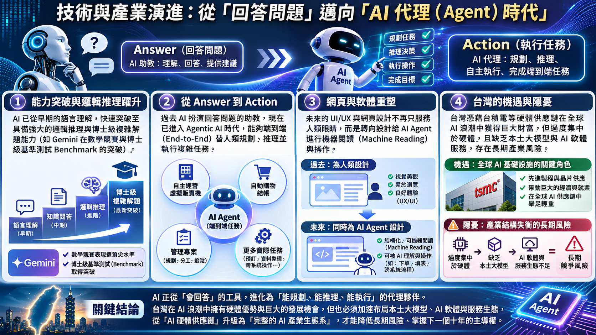

今天，我們一起走這一趟
依序講解、討論與練習；時間是建議，講師可依現場反應調整。
從同仁的 AI 使用經驗出發，提出今天的核心問題。
從問答走向分工，理解人的判斷與信任。
逐站認識從議題到後續服務。
選擇回應、分組討論，再練習開場。
拆解商周議題圖卡與示範提示詞。
選一個客戶情境，練習自然提問。
每人選一個動作，明天就能開始。
「最近你用過 AI 做什麼？它幫了你什麼忙？又有哪些事，你還是希望由人來判斷？」請兩位同仁分享，每人約 30 秒。今天要練習的，是把資訊轉成有溫度的服務。
從「問答案」到「安排任務」
先說清楚任務、提供適當背景，再檢查成果；自主執行程度取決於工具和設定。
一般問答
例如：「幫我想三個和家庭保障有關的開場問題。」AI 回答後，由我們挑選、修改並使用。
任務流程
把工作拆成找資料、整理重點、寫草稿與檢查；不同工具可能協助其中一部分，不能假設它已完成所有步驟。
業務員的角色
決定目標、查證資料、理解客戶、取得同意，並對最後的說明負責。
「你是早會教材編輯。請以一般家庭生活成本為背景，設計三個尊重客戶、沒有推銷壓力的開放式問題；以繁體中文條列，若涉及數據請列出待查證項目。」
此為本網頁設計的示範，不需輸入真實客戶資料。
講解 3 分鐘；請同仁兩人一組，把「幫我寫保險文案」改寫成有任務與背景的指令 2 分鐘；邀請一組分享，討論哪些內容仍需人工核對 2 分鐘。
查看原始專家主題圖

圖為專案既有素材；其中專家觀點與細節需核對原始出處，教學整理並非逐字引用。
一則議題，走進一場對話
點選六個步驟，看看 AI 可以協助什麼，以及業務員要留下什麼判斷。
講師提示：8 分鐘帶領方式
先問同仁：「最近哪則新聞，客戶也可能有感？」約 1 分鐘。接著依序點開六站，每站用自己的案例講約 1 分鐘；最後問：「哪一站最需要你自己的判斷？」約 1 分鐘。強調 AI 草稿需由人確認，客戶對話先從理解需求開始。
「我有買，不用看！」
邀請同仁先選一個回答，再討論客戶可能的感受。這是教學情境，沒有唯一標準答案。
講師提示：10 秒保障挑戰
請同仁用 10 秒在心中回想，自己是否清楚已投保的保障項目與內容；不需說出保額或個人資料。花 3 分鐘點選三種回答並討論感受，再兩人一組輪流扮演客戶與業務員，各練 2 分鐘；最後 1 分鐘邀請自願分享。可用手機或手錶計時。
如果是你，會怎麼接？
一則時事，如何變成客戶素材？
以專案內的商周議題圖卡為例，逐步示範；提示詞與對話為本網頁重新設計的教學範例。
十張剪報，逐張帶著看
用「上一張／下一張」依序講解，或從清單直接選擇；點圖可開啟原圖。
 開啟原圖放大 ↗ 查看雜誌封面 ↗
開啟原圖放大 ↗ 查看雜誌封面 ↗來源：專案內「商周新議題新台幣大縮水」圖卡；封面另列。圖卡中的數字、財務內容及來源仍待核對。
第 1–2 步各 2 分鐘：請同仁說出客戶生活裡可能有感的問題；第 3 步 2 分鐘：讀出示範提示詞，請大家補一項需求；第 4 步 3 分鐘：練習開場並一起說出需要查證的事項。
原素材中的數字、引用及金融內容尚待核對來源與日期；圖卡僅作課堂示例，非個人化投資或商品建議。公開使用前須確認素材授權。
從 AI 話題，聊到客戶的生活
先理解客戶重視什麼，再詢問是否願意進一步盤點；不把每個話題直接導向商品。
選一個情境：1 分鐘閱讀；3 分鐘一人扮演客戶、一人練習提問；交換角色 2 分鐘；最後 1 分鐘分享「哪一句話讓人願意繼續說」。不必分享個人家庭、健康或保單資料。
講師補充：如何從關心走向保障討論
先問開放問題 → 確認理解對方的回答 → 徵詢是否願意盤點 → 依正式資料與個人需求討論。若客戶暫時不願意，尊重選擇並維持關係。
分享前，四個人工檢查
這張卡可放在工作流的最後，也可以在時事範例後快速帶過。
標出原始來源與日期，核對文章、數據及圖卡是否一致。
避免把推測當事實；保障、條件與商品內容依正式資料核對。
示範使用虛構資料；處理真實資料前依公司規定與適用要求確認。
先了解需求並尊重意願，不以單一圖卡取代個別分析。
讓客戶記得你：打造個人形象
把你的專業、服務對象與個人特色，轉成一致的圖像與日常關懷素材。
你的服務特色
你希望幫助誰？客戶遇到什麼問題時會想到你？用一句話說出你的專業與關懷。
例：「我陪伴年輕家庭看懂保障，一步步準備未來。」
從形象到圖卡
原始工具頁包含個人 IP 海報企劃、形象圖、早安圖提示詞，以及 LINE 貼圖相關工具。
做成你的風格
依你的服務方式調整文字、風格與簽名；檢查圖片文字、人物特徵及內容，再決定如何使用。
先請同仁想一句自己的服務定位，再開啟工具頁選擇個人品牌形象或早安圖。若要放入原有 50 分鐘，建議把此段當作課後延伸，或從其他討論時間挪用 3～5 分鐘。
工具由外部服務提供，可能需要登入，功能與使用條件以原工具為準。上傳照片前請確認服務的資料使用與隱私設定；生成成果與文字請自行檢查。
明天，先完成一個小動作
選一張行動卡，讓今天的早會從理解走向練習。
請每人選一張卡，寫下一個明天可完成的小動作（1 分鐘）；邀請兩位同仁分享（2 分鐘）；最後提醒：AI 幫忙整理，人負責查證、理解與陪伴（1 分鐘）。
選一則客戶有感的新聞
記下來源與日期，想一個和生活有關的開放問題。
和同事練一次健診開場
先傾聽，再詢問對方是否願意一起整理既有保障。
檢查 AI 草稿再使用
確認事實、來源、適合性與個資處理；商品內容以正式資料為準。